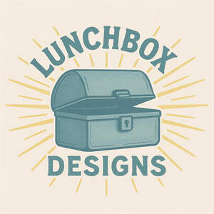

Trade Mark Journal No.2025/033 15 August 2025
UK00004245768 7 August 2025 (9,28)

- Class 9
- Data and image processing software for making three dimensional models; Downloadable digital image files authenticated by non-fungible tokens (NFTs); Downloadable computer graphics; Downloadable video files; Fridge magnets; Refrigerator magnets; Decorative refrigerator magnets; Magnets; Decorative magnets; Magnets (Decorative -); Permanent magnets; Erasing magnets; Ornamental magnets; Lifting magnets; Decorative magnets in the shape of letters; Decorative magnets in the shape of animals; Decorative magnets in the shape of numbers; Magnetic pens; Downloadable comic strips; Animated cartoons; Cartoons (Animated -).
- Class 28
- Toy models; Models being toys; Model toys; Toy scale models; Scale model cars [playthings]; Plastic models being toys; Toy model cars; Model vehicles (scale -) [playthings]; Scale model vehicles [playthings]; Scale model cars [toys]; Toy model vehicles; Toy model kits; Scale model vehicles [toys]; Rockets being toy models; Scale model kits [toys]; Novelty toys for parties; Miniature car models [toys or playthings]; Model cars [toys or playthings]; Scale model structures [toys]; Model cars; Toy and novelty face masks; Toy model kit cars; Gliders [scale models]; Model vehicles; Scale model buildings [toys]; Toy miniature model boats; Plastic model kits for making toy vehicles; Automobile engine models being toys; Novelty toys for playing jokes; Scale model vehicles; Model vehicles (Scale -); Vehicles (Scale model -); Scale model aeroplanes; Kits of parts [sold complete] for making toy model cars; Toy model hobbycraft kits; Scale model airplanes; Toy model hobby craft kits; Toy modeling compounds; Scale model figures; Model helicopters; Toy model train sets; Model aircraft; Craft model kits; Tracks for model vehicles; Kits of parts [sold complete] for constructing models; Models for use with war games; Model vehicle racing sets; Models for use with role playing games; Toy model theatres in the form of children's theatre sets; Model plane kits; Football field model toys; Model railways; Modeled plastic toy figurines; Radio controlled scale model vehicles; Animal replicas as playthings; Scale model vegetation; Cases for toy vehicles; Magnetic putty being toys; Fantasy character toys; Rubber character toys; Games relating to fictional characters; Toy human characters; Plastic character toys; Role play games; Play sets for action figures; Role playing games; Miniature die cast vehicles; Doll costumes; Skill and action games; Action skill games; Toy chemistry sets; Play figures; Toy environments for use with action figures; Toy figures capable of transforming into various shapes; Jokes (play things); Toy action figurines; Playsets for action figures; Wooden pieces for shogi game (koma); Toy armor; Mascot dolls.
Danny Bartlett